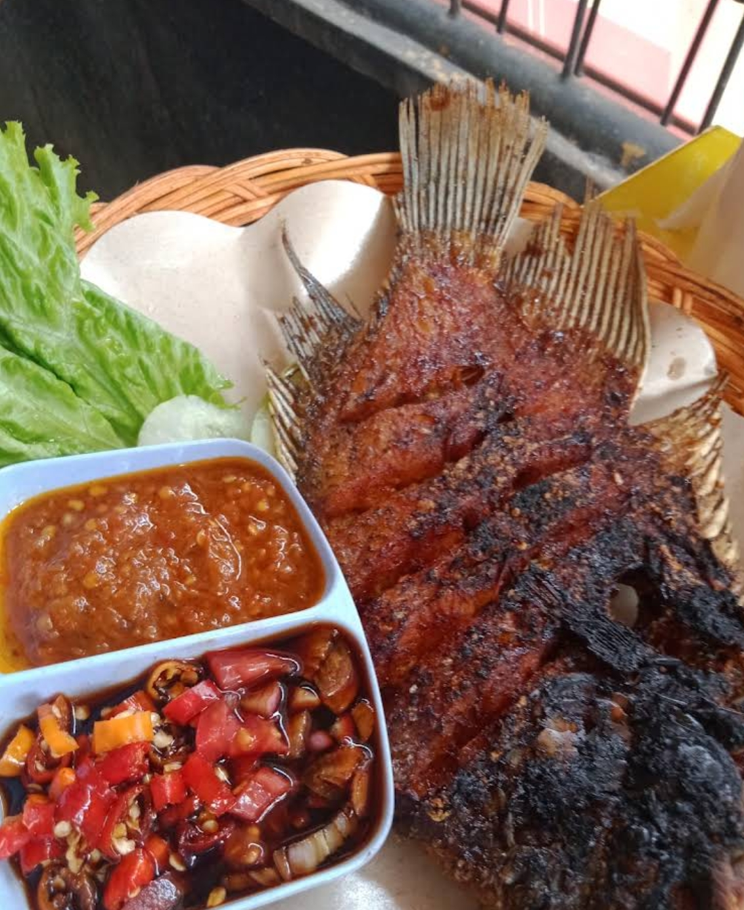
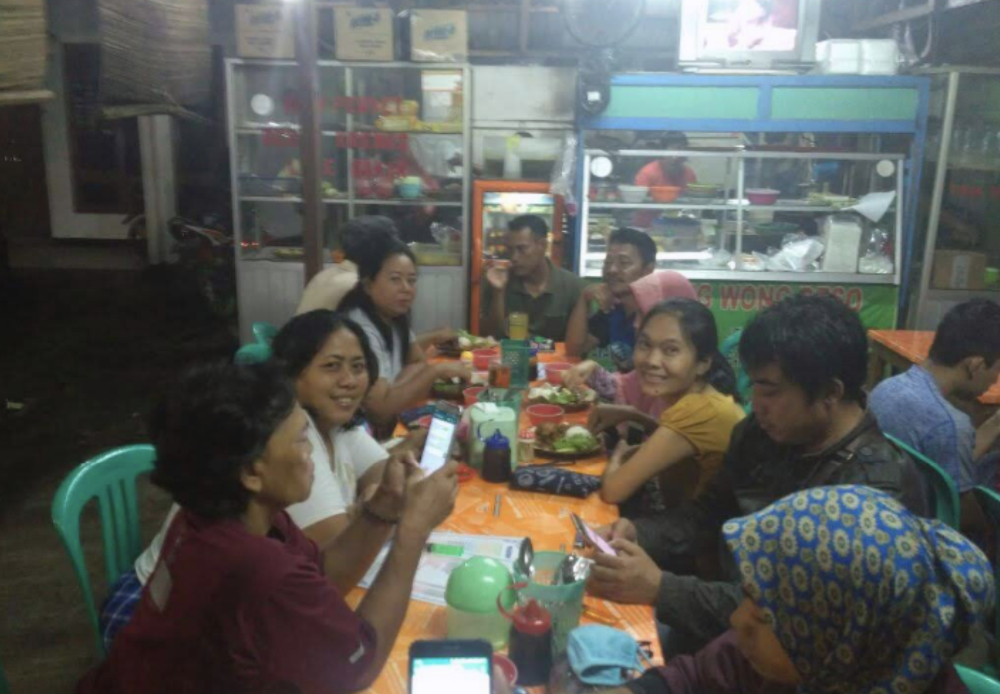
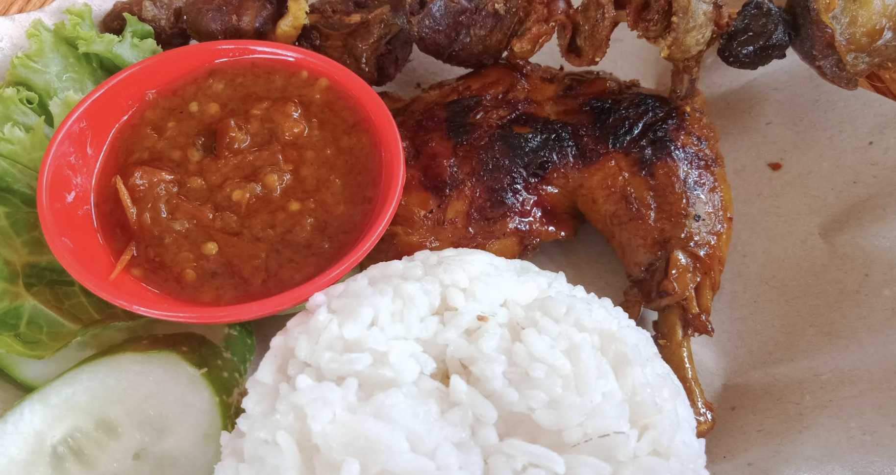
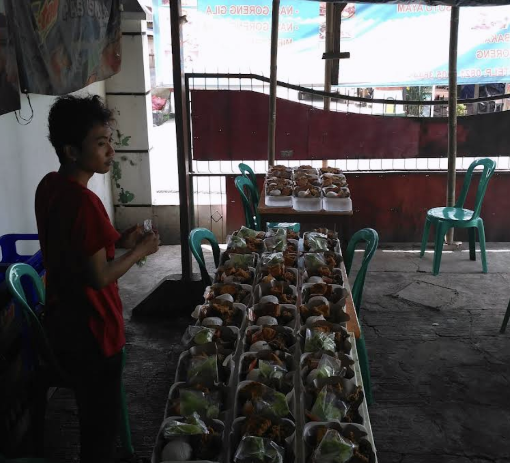
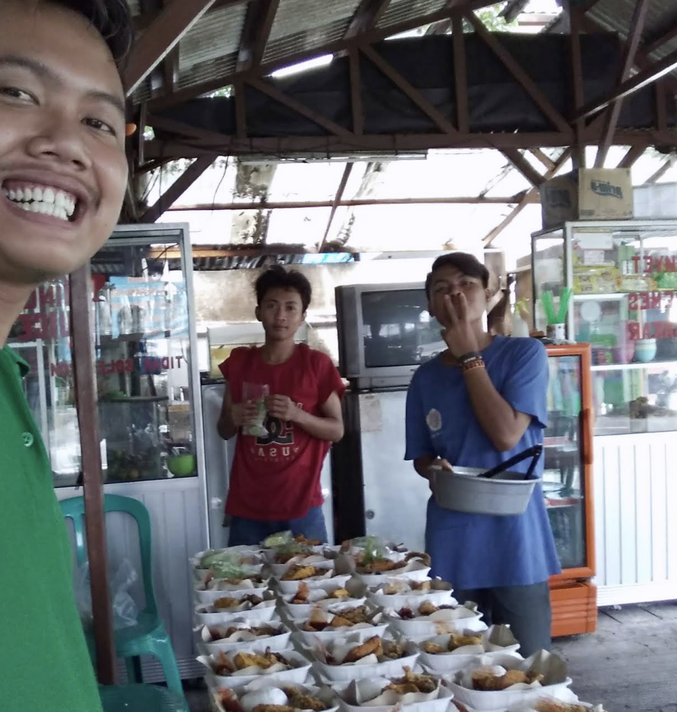
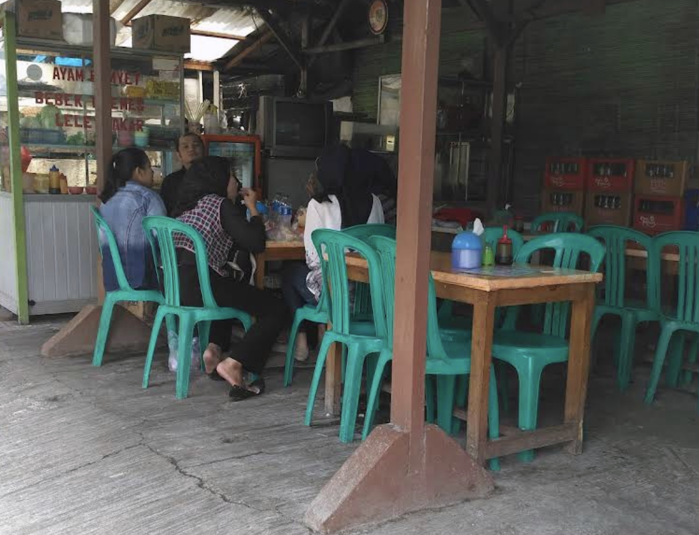

 Ikan Bakar Sambal Hidangan yang pernah dipesan  Makan Bersama di Warung Orang-orang yang pernah berkunjung  Nasi Ayam Bakar Hidangan yang pernah dipesan  Nasi Kotak Pesanan Hidangan yang pernah dipesan  Nasi Kotak Siap Antar Hidangan yang pernah dipesan  Suasana Warung Orang-orang yang pernah berkunjung